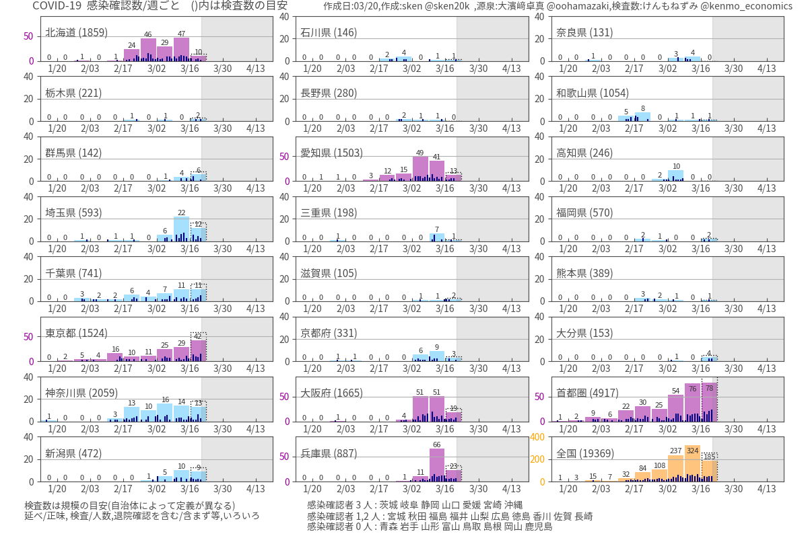
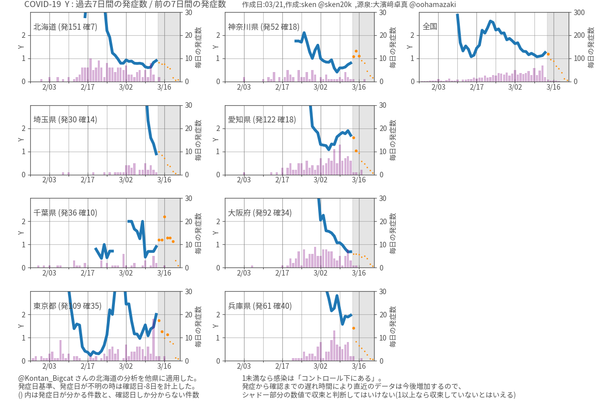

新型コロナウイルスの時系列分析¶
感染確認数が毎日のように報道されているが、 数字だけみていても全体的な傾向は把握しにくい。 都道府県毎の累積数のマップが提示されることも多いが、 現時点での動向(感染が拡大しているのか、収束にむかっているのか) が分からない。 日々の感染確認数を都道府県別にグラフにしても、 バラツキが大きくて分かりにくい。そこで、都道府県毎に 一週間単位で集計したトレンドグラフを作成した。
- ::
感染確認数の増加が、必ずしも感染者の増加を意味するわけではない。 検査方針の変更や、検査体制の拡充などで増加することもある。
一週間単位でみた新規の感染確認数の変化¶
感染確認数を一週間ごとに集計した。 日次のデータはバラツキが大きく、傾向を見るのが難しいときがある。 一週間ごとの集計は、時間遅れが生じるデメリットはあるが、長期的な 傾向をしっかり確認できる安心感がある。 各都道府県の状況を時系列できるように複数のグラフを並べている。 感染確認数は、検査方針の変更や検査体制の拡充などによって も上昇するので、解釈はむずかしい。減少傾向にある場合は、 検査体制の疲弊や崩壊などを考えなければ、安心材料になるだろう。 グラフの作成日は 2020-03-20。
グラフの色ごとに縦軸のスケールを揃えている
都道府県名の後ろのカッコ内の数字は、検査件数の目安である
グラフのシャドー部分は未来を表す
最後のビンは集計途中なので今後増える(点線で示したBox は週内の線形予想)
各 Box の下の髭のようなものは、日次の感染確認数
図をクリックすると拡大します
{kind=link}
気づき事項¶
北海道 、緊急事態宣言が終了した(3/19)。この図でも十分なっとくできる。
愛知/大阪/兵庫は、報道でも心配されているが、件数だけみれば収束の傾向がある。 リスク判定には、クラスタの詳細(病院やケアハウスを含むかどうかなど)を見るのだろう。
東京は、あまり注目されていないが、 週当たりの新規感染数は長期に渡って増加傾向にある
埼玉/神奈川/千葉は、東京の影に隠れているが、 首都圏としてかたまりで見ると、東京単体より強めの増加傾向が見えてくる。
今週と前の週の発症数の比率¶
(直近１週間の発症数)と(その前の１週間の発症数)の比をプロットしたグラフである。 @Kontan_Bigcat さんが Twitter に投稿した北海道の分析を他県に適用した。
この数値が 1 より小さければ収束に向かっていると判断できる。
検査方針の変更などで捕捉率上がると、一時的に上昇する。
発症数が少ないと誤差が大きいので注意が必用。
都道府県名の後ろのカッコ内の数字は、発症日が分かる件数と、確認日しか分からない件数。
発症日が不明の場合は、確認日の8日前の日付を使っている。
発症から確認まで遅れ時間がまるので、直近の値は今後増える可能性がある。
一週間の発症数が少ない期間(n<4)は誤差が大きいので計算していない
検査方針の変更に伴う捕捉数の変化を拾う可能性がある
その領域を各グラフのシャドーで示している。
シャドー部分の数値で収束を判断してはいけない
1 以下でも安心できないという意味で、1 以下の時はマーカーサイズを小さくした
図をクリックすると拡大します
{kind=link}
気づき事項¶
北海道は、1 以下を保っているが、1 に近い状態が続いている(要注意)。 緊急事態宣言(2/28)の手前から減少傾向がみられる。 感染確認数の増加に伴って、道民が自発的に対策をした結果と捉えることもできそうだ。
東京は、3月の初めから 1 以上が続いている
全国は、2/20頃から順調に低下して、1以下になりそうなところで反発している。 複数の都道府県をまとめた結果、きれいな曲線に乗っているのが印象的。
注意点¶
PCR 検査の方針や検査件数の能力は都道府県毎に差があるので、それを一律に扱 うことの意味は良く分からないところがある。検査能力には検体を採取する医師 や検査装置を扱う技師だけでなく、相談を受け付ける段階や、クラスターや濃密 接触者を追跡/調査するマンパワーのようなものまで含まれる。
検査の件数が少ない(無症状や軽症者の実態が反映されていない)事、クラスター や濃厚接触者を中心に検査を実施している(検査の対象が偏っている)事、外国か らの帰ってきた人が感染している事象が少なくない事なども、データの解釈を難 しくさせている。
先日の専門家会議の資料では、リンクがたどれない事例だけ抜き出して、爆発的 な感染の可能性を議論していた。ここでは、そのような詳細な分析はできないの で、観測数の少なさや偏りを全部含めたうえで、最終的に現れる感染確認数や発 症数の動きを見ている。学術的な議論(モデルとの比較など)には適さないが、現 象論的に(経験則的に)現状を把握して、未来への見通しを得る事はできるだろう。
データ源泉¶
ジャグジャパン株式会社 csv 形式でデータを公開している。
都道府県別の検査数・陽性者数の時系列データ けんもねずみ(@kenmo_economics)さんが個人で収集整理した検査データ。